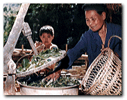
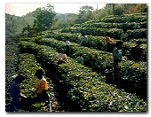

鲰─觚
a於台常台骋笆废清朝道光年，初le人林P池母＝Щ匚湟能枝─觚植於鲰山，基於天r、地利、人和，叭怀椴璧狞S金王。
台觚是觚茶中l酵程度最重的一N，|觚的u造，r~原料橐谎慷~，著名的膨L茶，tx用一芽一~樵料。觚茶茶芽肥眩白毫@，色呈琥珀般的橙t色，在H市霰蛔u椤跋觚”、“|方美人”，以其殊香美色。榍嗖桀代表。
南─普洱
普洱茶原a於南省，生av史悠久，南宋李石《m博物I》d，西藩用普茶已自唐朝。清代普洱府即F代普洱h周所a茶~\至普洱府集中加工再\N，蒙、康、藏各地普洱茶因此得名。
普洱茶是用良南大~N，衿漉r~⑶噌崛嗄怼袂的袂嗖樵料，a堆的特殊加工u成，l索粗逊蚀螅色或褐t，滋味醇厚回甘，K具特香。普洱茶，被J槭且环N具有保健功效的料。tWR床C明，普洱茶具有降低血脂、p肥、抑菌、助消化、暖胃、生津、止渴、醒酒、解毒等多N功效。[牧民族主食肉，俗V“可三日oZ，不可一日o茶”，可普洱茶降低血脂自古即有明C。普洱茶楹诓桀之代表。
武夷─大t袍
武夷山素有“奇秀甲於|南”之u，自古以砭褪沁[[俚亍Ｎ湟纳剿以蜚中外，不
H它的L光秀，在它盛a“武 夷 岩 茶”岩茶之l，“奇 N”、“ N“、“名 病备骶咛厣，名彩茄也柚王。@些名仓中又以四大名玻捍蠹t袍、F_h、白u冠、水金最槊F，又以大t袍享有最高u，可^觚茶中的“茶中之}”F在[客在
武夷山[[，啜名O品，略范仲俺云：不如仙山一啜好，冷然使欲乘Lw之意境。
安溪─F^音
F^音原a於福建安溪h，安溪F^音u作乐，技精巧。一年分四季裱u，e雨至立夏榇翰瑁a量兹年的一半，品|最好。安溪F^音的u造工要^銮唷袂唷銮唷⒆銮唷⒊辞唷⑷嗄怼⒊醣骸捅骸桶揉、文火慢烤、簸等工序才u成。F^音的品，目前在福建泉州BT、漳州以及BT、潮汕一Ш团_常仍沿u鹘y的功夫茶品方式。陶刂貌瑁_以沸水此r即有一股殊香浔嵌恚正是未甘露味，先}妙香，有朋自h方恚以功夫茶，_是一N表示敬重客人的生活g。
洞庭─碧螺春
洞庭碧螺春，是中名茶珍品，以“形美、色G、香狻⑽洞肌彼慕^名中外，碧螺春a於江K省太湖洞庭山，洞庭分|、西缮剑夂睾停空，土壤呈微酸性，Om茶渖L。洞庭碧螺春a^，是我著名的茶、果g作^，茶浜吞摇⒗睢⑿印⒚贰⒔邸白果、石榴等果木交eN植。茶洹⒐渲肯噙B，根}相通，茶吸果香，花a茶味，陶冶著碧螺春茶果味的天然品|。碧螺春裱u技高超，裾有三大特c，一是摘得早，二是竦媚郏三是得Q。~形卷如雀舌，500
公克高碧螺春s需 6.8～7.4fw芽^，可茶~之幼嫩，摘窆Ψ蚪^非一般。品碧螺春H有情趣，癫ＡП用 70° ～ 80° _水_泡置茶，碧螺春投入杯中，茶即沈底，瞬g白翻L，雪花w舞，清香u人，碧清、香d、回甘、F如珍，宛如高工品，榫G茶典型代表。
{峰─井
西湖之泉，以虎跑樽睿缮街茶，以井榧选！盎⑴芩，井茶”槁名中外杭州西湖的p^。井茶裱u技g考究。裾有三大特c，一早、二嫩、三勤。茶r常f：早袢天是，t袢天是草，通常以清明前裱u樽罴雪しQ明前茶，杭州井茶可分三品，{峰井，梅]井，西湖井。{峰井香飧咪J而持久滋味r醇色陕渣S，槿品中品|最佳，品井多用玻璃杯或w杯水85℃_泡，色碧G明亮，香馥如m，滋味甘醇r爽，向有“色G、香d、味醇、形美”四^之u。
太O─翠螺
太O翠螺，因外形郧似螺，
色删G翠而得名，榻K省之 名茶。翠螺侔牒孓够ú瑁 摘室谎恳蝗~，分收、 青、揉捻、烘乾再揉捻、炒乾 再烘乾七道工序，再以四至五
~嫩芽以手工勾猿芍椋再配 以七道高雅天然花香薰u，入 口M口生津，香馑囊纾久 耐泡，^酌香、二酌狻⑷酌 味不p、四酌味q存。品|特c是l索o郧，茸毫
披露，色纱渚G，香馇甯撸滋味夂瘢色G而明亮 ，以_水80℃_泡，味香持久、耐泡。榻代新品G茶。
君山─白毫
君山楹南省洞庭湖中一小 u，春夏湖水蒸l，F漫 ，生Bh境最mN茶。君山白 毫偌Q白毛猴，裾於清明前 三天，直接牟渖裱款^
，榉乐共芽^和茸毛，盛 茶{纫r有白布。因品N良 ，阎ο。芽^肥阎， 每斤茶s二f五仟芽^，君 山白毫，L格特，qa不多，|量超群，槲名
茶之佼佼者。用Q透明的玻璃杯_泡r，可以看到初 始芽尖朝上，蒂^下垂，而Q於水面，S後降落 粤㈧侗底，忽升忽降蔚槿び^，最多可_三次，故君
山白毫有“三起三落”之Q，僦白茶之代表。
峨嵋─珠茶
 珠茶─亦QA茶，原a浙江省
平水茶^，浙江平水a茶，v 史已很悠久，h在一千多年前 ，平水茶^包括浙江省、Bd 、嵊h、山、T暨、天台、 奉化等十Nh市，境壬XP
Y，峰密起伏，F@，溪 流vM，夂睾停m于茶~ 生a。珠茶是中最早出口的 商品之一，18世o珠茶以“ 熙茶”L靡世界茶，且售r甚高，茶r之高不於珠
，曾被u"G色珍珠"。
珠茶─亦QA茶，原a浙江省
平水茶^，浙江平水a茶，v 史已很悠久，h在一千多年前 ，平水茶^包括浙江省、Bd 、嵊h、山、T暨、天台、 奉化等十Nh市，境壬XP
Y，峰密起伏，F@，溪 流vM，夂睾停m于茶~ 生a。珠茶是中最早出口的 商品之一，18世o珠茶以“ 熙茶”L靡世界茶，且售r甚高，茶r之高不於珠
，曾被u"G色珍珠"。
 祁T─工夫t茶
祁T─工夫t茶
祁T工夫t茶，是我鹘y工夫t 茶的珍品，有百N年生av史。祁 t以外形苗秀、色有先和香 d著Q，在韧庀碛惺⒆u。外 把祁tc印度大吉X茶、斯里m卡
醴サ募竟茶，K列槭澜绻J的 三大高香茶。 主NW洲，清更能I略祁Tt茶 的特殊香味，加奶後乳色粉t，其 香味特cq存，因而A得H市
最高ur，1915年巴拿R展[曾 @金|，祁t更被列橹的事Y茶，於W洲是 下午茶的珍品，F作珍物送H友，以@示身份高F 不凡。是中t茶之代表。